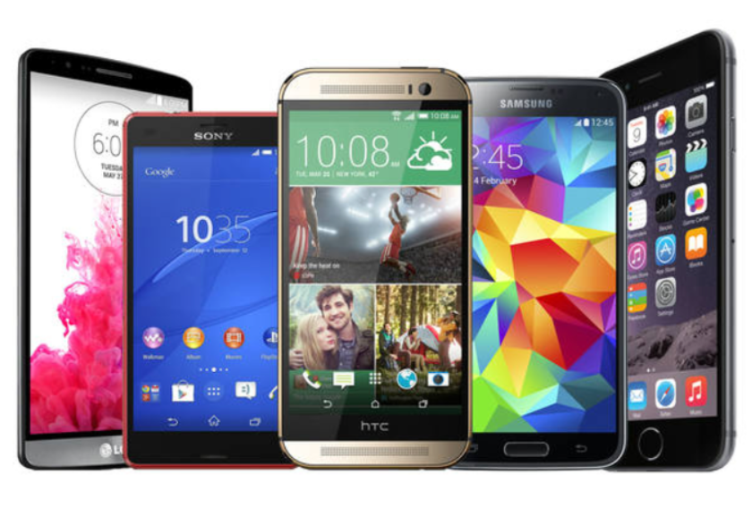

스마트폰은 컴퓨터를 결합한 무선 휴대전화기이다. PC에서 실행되는 운영체제보다 작게 만든 모바일 운영체제를 탑재하여 인터넷 검색, 전자우편, 간단한 문서 편집, 오디오 및 비디오 재생 등 PC의 기능을 거의 모두 갖추고 있다.
스마트폰은 PC와 같은 기능과 더불어 고급 기능을 제공하는 휴대 전화이다. 응용 프로그램 개발자에게는
표준화된 인터페이스와
플랫폼을 제공하여 완전한 운영 체제 소프트웨어를 실행하는 전화일 것이고,
다수의 일반인에게는
전자 우편·인터넷·전자책 읽기 기능·내장형 키보드·외장 USB 키보드·mini-HDMI 단자 등을
갖춘 고급 기능이 있는 전화로 비칠 수 있다.
다시 말해 스마트폰은 전화 기능이 있는
소형 컴퓨터라 볼 수 있다.
최초의 스마트폰은 IBM 사이먼으로 추정된다. IBM사가 1992년에 설계하여 그 해에 미국 네바다 주의 라스베이거스에서 열린 컴댁스에서 컨셉 제품으로 전시되었다.[7]
| 1세대폰 | 2세대폰 | 3세대폰 |
|---|---|---|
| 음성 통신(아나로그) 흑백,저해상도 전화 본연기능 |
음성 ,문자 통신(디지털) 컬러LCD, 고해상도 융합기능(MP3,DMB, 카메라,캠코더) |
데이터 통신 대형 LCD, 터치스크린 PC기능(인터넷, 이메일, 문서 ) |
안드로이드(영어: Android)는 휴대 전화를 비롯한 휴대용 장치를 위한 운영 체제와
미들웨어, 사용자 인터페이스 그리고 표준 응용 프로그램(웹 브라우저, 이메일 클라이언트,
단문 메시지 서비스(SMS),
멀티미디어 메시지 서비스(MMS)등)을 포함하고 있는 소프트웨어
스택이자 모바일 운영 체제이다.
아이폰(영어: iPhone)은 미국의 애플사의 휴대전화 브랜드및 시리즈이다. 2007년 1월 9일에 스티브 잡스가 처음으로 발표를 하였다.
| 스마트폰 샘플 |  |
|---|